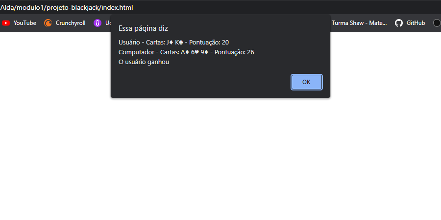
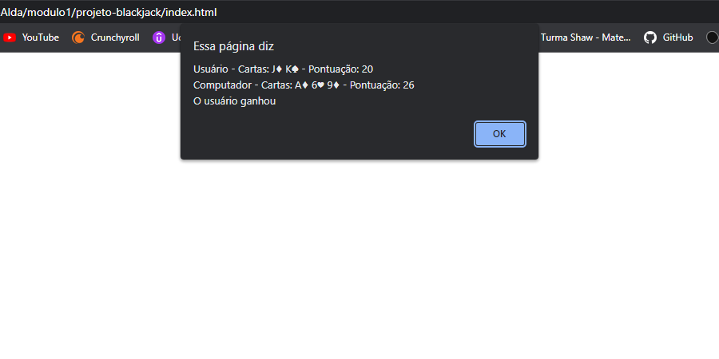

Neste projeto utilizei diversos conceitos lógicos de programação para criar, segundo os parâmetros do famoso jogo de cartas, também conhecido como 21, uma experiência simples e divertida com o navegador.

 
